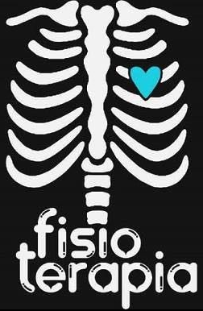

Bienvenido a Fisioterapia
La FISIOTERAPIA es definida por Holser como la ciencia
o parte de la medicina que utiliza agentes y técnicas
de naturaleza física para el diagnóstico, tratamiento y
prevención de enfermedades.
Krussen plantea que constituye una rama de la medicina que
utiliza agentes físicos como luz, calor, agua y electricidad.
(Guerra, 2018, p. 159)
